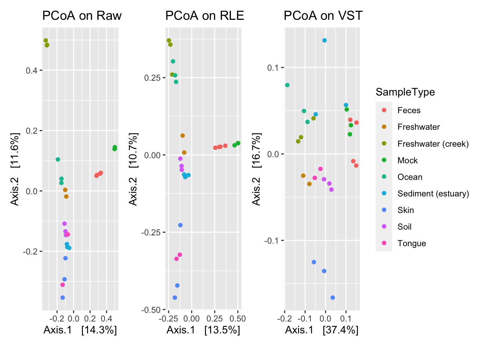

Chapter 5 Library Size and Composition Scaling Methods
5.1 DESeq
5.1.1 About DESeq
The DESeq2 package includes a normalization method for adjusting for differing library sizes across samples (Anders and Huber 2010). This method also can account for differences in library composition. A scaling factor to normalize each sample takes into account both library size and library composition. This method has also been called MED, RLE, or DESeq in the literature.
DESeq2 first takes the natural logarithm of every entry in the count matrix. Due to this, all entries with zero will be set to negative infinity. Next, the row average is calculated (geometric average), so we have a vector of average counts for each taxon. Taking the log first should avoid undue influence by extreme outliers. All taxa with an average of infinity are removed. This step will remove all taxa with zero read count in one or more samples. This can be a problem in microbiome data. Next, we subtract the average log value from the log(counts), this gives a log ratio. This is equivalent to the ratio of the reads in each sample to the average across all samples. Next, we calculate the median of the log-ratios for each sample. These medians are converted to scaling factors for each sample by exponentiation. An extension of this method, denoted ‘poscounts’, has been suggested, which instead of taking the geometric mean of the logged counts for each taxon, we take the n-th root of the product of the non-zero counts.
This method assumes that the taxon of median absolute abundance is not differentially abundant, which is more likely true for the RNA-Seq it was developed for, but may not be true for microbiome studies, especially when there are more study groups, or we are analyzing higher taxonomic levels.
An additional option can be used to perform a variance stabilizing transformation on the count matrix before normalizing with the above size factors. This method calculates a dispersion-mean relationship and then transforms the data. The result ideally is an abundance matrix that is approximately homoskedastic or constant variance across the range of mean values. The package also includes an option for a ‘rlog’ transform, which they recommend over the variance stabilizing method in the case when there is a large difference in library sizes.
If differential abundance is of interest to calculate, DESeq uses a negative binomial distribution to model differential abundances. It is possible to provide the size factors calculated by another method to DESeq to perform differential analysis.
5.1.1.1 DESeq walkthrough
Consider again this example dataset.
| Taxa | Sample 1 | Sample2 | Sample 3 |
|---|---|---|---|
| Taxon 1 | 132 | 103 | 11 |
| Taxon 2 | 7 | 48 | 3 |
| Taxon 3 | 0 | 2 | 1 |
| Taxon 4 | 23 | 15 | 2 |
| Taxon 5 | 71 | 80 | 5 |
The first step in DESeq normalization is to take the natural log of each entry in the count matrix.
| Taxa | Sample 1 | Sample2 | Sample 3 |
|---|---|---|---|
| Taxon 1 | 4.882802 | 4.6347290 | 2.3978953 |
| Taxon 2 | 1.945910 | 3.8712010 | 1.0986123 |
| Taxon 3 | -Inf | 0.6931472 | 0.0000000 |
| Taxon 4 | 3.135494 | 2.7080502 | 0.6931472 |
| Taxon 5 | 4.262680 | 4.3820266 | 1.6094379 |
Notice the one entry with zero counts is marked as negative infinity.
Next, the average of the logged values is taken across the samples. This results in an average log value for each taxa. This averaged log value is helpful for normalizing because it is not overwhelmed by outliers.
| Taxa | Average Log Counts |
|---|---|
| Taxon 1 | 3.971809 |
| Taxon 2 | 2.305241 |
| Taxon 3 | -Inf |
| Taxon 4 | 2.178897 |
| Taxon 5 | 3.418048 |
The row for the taxa that contained a zero on one of the samples is negative infinity. This taxon is now excluded from the following steps. This step results in removing any taxa that have zero counts from being considered to contribute to calculating the scaling factors.
The next step is to subtract the average log values (step 2) from the log of the raw counts (step 1), only including rows that were not filtered. This step shows which samples have counts in a sample higher or lower than the average.
| Taxa | Sample 1 | Sample 2 | Sample 3 |
|---|---|---|---|
| Taxon 1 | 4.88 - 3.97 = 0.91 | 4.63 - 3.97 = 0.66 | 2.40 - 3.97 = -1.57 |
| Taxon 2 | 1.95 - 2.31 = -0.36 | 3.97 - 2.31 = 1.66 | 1.10 - 2.31 = -1.31 |
| Taxon 4 | 3.14 - 2.18 = 0.96 | 2.71 - 2.18 = 0.53 | 0.69 - 2.18 = -1.49 |
| Taxon 5 | 4.26 - 3.42 = 0.84 | 4.38 - 3.42 = 0.96 | 1.61- 3.42 = -1.81 |
Next, to calculate the scaling factors for each sample, we take the median of the log ratios calculated in the above step. Like using logs, calculating medians avoids the influence of outlier taxa that put undue influence on the scaling factor.
| Taxa | Sample 1 | Sample 2 | Sample 3 |
|---|---|---|---|
| Taxon 1 | 0.910000 | 0.660000 | -1.5700000 |
| Taxon 2 | -0.360000 | 1.660000 | -1.3100000 |
| Taxon 4 | 0.960000 | 0.530000 | -1.4900000 |
| Taxon 5 | 0.840000 | 0.960000 | -1.8100000 |
| Median | 0.875000 | 0.810000 | -1.5300000 |
| Exponentiated Median | 2.398875 | 2.247908 | 0.2165357 |
Finally, we normalize the data, by exponentiating the median log ratios for each sample, which are the final scaling factors. We then divide all the raw counts in a sample by the sample’s scaling factor.
| Taxa | Sample 1 | Sample2 | Sample 3 |
|---|---|---|---|
| Taxon 1 | 55.025787 | 45.8203808 | 50.799945 |
| Taxon 2 | 2.918034 | 21.3531872 | 13.854530 |
| Taxon 3 | 0.000000 | 0.8897161 | 4.618177 |
| Taxon 4 | 9.587827 | 6.6728710 | 9.236354 |
| Taxon 5 | 29.597203 | 35.5886453 | 23.090884 |
Since Taxon 3 had a zero count in sample 1, it was excluded from the calculation of scale factors. The above example dataset may not be characteristic of microbiome datasets. Microbiome datasets are zero-inflated, meaning that there are numerous zero counts in the raw count matrix. Even up to 80-90% of the counts in a microbiome datset can be zero. Because of this, if the zero-inflation in the datseta is not accounted for, very few, or even perhaps none of the taxa will contribute to calculating the scaling factor. One option so that all of the taxa are included in the calculation is to add a pseudocount so none of the counts are zero. Another option is the poscounts option, which is encouraged for microbiome data. Instead of taking the average of the logged counts, it takes the \(n\)th root of the non-zero counts. This replaces step 2 in this example.
5.1.2 DESeq R Code
5.1.2.1 Function
Here we provide two normalization functions implemented in R using DESeq methods. The first calculates the RLE normalization using the poscounts option for microbiome data. The second calculates the variance stabilizing transformation.
norm_DESeq_RLE_poscounts <- function(ps, group = 1){
require(DESeq2, quietly = T)
# keep arbitrary design for normalization
# Convert to DESeq object
ps_dds <- phyloseq_to_deseq2(ps, ~1)
# Calculate the size factors (scaling)
ps_dds <- estimateSizeFactors(ps_dds, type = "poscounts")
# Extract counts
counts <- DESeq2::counts(ps_dds, normalized = T)
# Convert back to phyloseq
otu <- otu_table(counts, taxa_are_rows = T)
sam <- access(ps, "sam_data")
sam$scaling_factor <- sizeFactors(ps_dds)
tax <- access(ps, "tax_table")
phy <- access(ps, "phy_tree")
ps_DESeq <- phyloseq(otu,sam,tax,phy)
return(ps_DESeq)
}
norm_DESeq_vs <- function(ps, group = 1){
require(DESeq2, quietly = T)
ps_dds <- phyloseq_to_deseq2(ps, ~ 1)
ps_dds <- estimateSizeFactors(ps_dds, type = "poscounts")
# Variance transformation
ps_dds <- estimateDispersions(ps_dds)
abund <- getVarianceStabilizedData(ps_dds)
# don’t allow deseq to return negative counts
# add the minimum count to all values
# another option is to replace negative counts with 0
abund <- abund + abs(min(abund))
otu <- otu_table(abund, taxa_are_rows = T)
sam <- access(ps, "sam_data")
tax <- access(ps, "tax_table")
phy <- access(ps, "phy_tree")
ps_DESeq <- phyloseq(otu,sam,tax,phy)
return(ps_DESeq)
}5.1.2.2 DESeq implemented on Global Patterns
Perform DESeq RLE normalization as well as DESeq variance stabilized transformation on Global Patterns:
Examine principal coordinate plots between raw data and both DESeq normalized data.
# First calculate distance matrices
gp_rle_dist <- phyloseq::ordinate(gp_deseq_rle, "PCoA", "bray")
gp_vs_dist <- phyloseq::ordinate(gp_deseq_vs, "PCoA", "bray")
# Plot ordinations
plot_ordination(gp_raw, gp_raw_dist, color = "SampleType", title = "PCoA on Raw data") +
plot_ordination(gp_deseq_rle, gp_rle_dist, color = "SampleType", title = "PCoA on RLE") +
plot_ordination(gp_deseq_vs, gp_vs_dist, color = "SampleType", title = "PCoA on VST") +
plot_layout(guides = 'collect')
See how dissimilarity matrices differ from raw counts and each DESeq transformation.
plot_norm_changes(gp_deseq_rle, gp_raw,
x_lab = "Raw", y_lab = "RLE",
title = "Distance metric comparision between RLE normalization and Raw counts ") /
plot_norm_changes(gp_deseq_vs, gp_raw,
x_lab = "Raw", y_lab = "VST",
title = "Distance metric comparision between VST normalization and Raw counts ") +
plot_layout(guides = 'collect')5.1.2.3 DESeq implemented on Kostic dataset
k_deseq_rle <- norm_DESeq_RLE_poscounts(k_raw)
k_deseq_vs <- norm_DESeq_vs(k_raw)
# First calculate distance matrices
k_rle_dist <- phyloseq::ordinate(k_deseq_rle, "PCoA", "bray")
k_vs_dist <- phyloseq::ordinate(k_deseq_vs, "PCoA", "bray")
# Plot ordinations
plot_ordination(k_raw, k_raw_dist, color = "DIAGNOSIS", title = "PCoA on Raw data") +
plot_ordination(k_deseq_rle, k_rle_dist, color = "DIAGNOSIS", title = "PCoA on RLE") +
plot_ordination(k_deseq_vs, k_vs_dist, color = "DIAGNOSIS", title = "PCoA on VST") +
plot_layout(guides = 'collect')plot_norm_changes(k_deseq_rle, k_raw,
x_lab = "Raw", y_lab = "RLE",
title = "Distance metric comparision between RLE normalization and Raw counts ") /
plot_norm_changes(k_deseq_vs, k_raw,
x_lab = "Raw", y_lab = "VST",
title = "Distance metric comparision between VST normalization and Raw counts ") +
plot_layout(guides = 'collect')
5.2 GMPR
5.2.1 About GMPR
A recent extension of the RLE DESeq method is the Geometric mean of Pairwise ratios (GMPR) approach (Chen et al. 2018). This method reverses the steps of RLE, and instead calculates the median count ratio of the non-zero counts between pairs of samples as although only a small number of taxa are likely to be shared for every sample, it is more likely that there are many shared taxa between pairs. It then uses the pairwise results to calculate the size factor for each sample. This method has slow computation, but is robust to differential and outlier taxa. The size factors can be inputted to DESeq and a VST transformation applied additionally. It is a newer method, and has unfortunately not been included in many benchmarking studies, although initial results show it to be more powerful than DESeq, not surprisingly, as it uses more data, as zero counts do not need to be discarded. It assumes there is a large invariant portion of the count data, similar to other methods.
5.2.2 GMPR Walkthough
Consider the following zero-inflated dataset. Notice that there are no taxa that are present in every sample.
| Taxa | Sample 1 | Sample2 | Sample 3 |
|---|---|---|---|
| Taxon 1 | 132 | 103 | 0 |
| Taxon 2 | 0 | 48 | 74 |
| Taxon 3 | 0 | 2 | 0 |
| Taxon 4 | 23 | 0 | 35 |
| Taxon 5 | 71 | 80 | 0 |
| Taxon 6 | 0 | 96 | 82 |
The first step in GMPR normalization is to calculate the pairwise median count ratio between samples. We first calculate the scaling factor for sample 1. The pairwise comparisons we need to make are between sample 1 and sample 2 as well as sample 1 and sample 3. For both pairs, we calculate the ratio of the counts of taxa that the pair shares. Between sample 1 and sample 2, the shared taxa are 1 and 5. Between sample 1 and sample 3, taxon 4 is the only one shared.
| Taxa | Sample 1 | Sample2 | Sample 3 | Count ratio between 1 and 2 | Count ratio between 1 and 3 |
|---|---|---|---|---|---|
| Taxon 1 | 132 | 103 | 0 | 132/103 | |
| Taxon 2 | 0 | 48 | 74 | ||
| Taxon 3 | 0 | 2 | 0 | ||
| Taxon 4 | 23 | 0 | 35 | 23/35 | |
| Taxon 5 | 71 | 80 | 0 | 71/80 | |
| Taxon 6 | 0 | 96 | 82 |
Then we calculate the median of the ratios between each pair. Between sample 1 and 2, the two ratios between shared taxa are (132/103, 71/80). Then the median of those is 1.085. Between sample 1 and 3, there is only one shared taxa, so the median is 0.657.
Finally to find the scaling factor for sample 1, we calculate the geometric mean of the two medians of the pairwise shared taxa ratios. In this case it is the geometric mean of 1.085 and 0.657, which equals 0.844. This is the scaling factor for sample 1. We now repeat this process to find the scaling factor for sample 1 and sample 3.
5.2.3 GMPR R Code
5.2.3.1 Function
The following provides the R code to implement GMPR normalization in R. We can additionally specify the number of taxa that should be shared between paired samples as well as the minimum count labeled as nonzero. The default values are 4 and 2 respectively.
norm_GMPR <- function(ps, intersect_no = 4, min_ct = 2){
require(GMPR, quietly = T)
# Convert data to correct format for GMPR function
otu <- as(otu_table(ps), "matrix")
if(taxa_are_rows(ps)){otu <- t(otu)}
otu_df = as.data.frame(otu)
otu.tab <- matrix(otu, ncol = ncol(otu))
# calculate scaling factor
# OTU matrix must be a data frame where OTUs are arranged in columns and samples as rows
gmpr.size.factor <- GMPR::GMPR(OTUmatrix = otu_df,
intersect_no = intersect_no,
min_ct = min_ct)
# normalize
otu.tab.norm <- t(otu / (gmpr.size.factor))
# convert back to PS
otu_ps <- otu_table(otu.tab.norm, taxa_are_rows = T)
sam <- access(ps, "sam_data")
sam$scaling_factor <- gmpr.size.factor
tax <- access(ps, "tax_table")
phy <- access(ps, "phy_tree")
ps_GMPR <- phyloseq(otu_ps,sam,tax,phy)
return(ps_GMPR)
}5.3 TMM (edgeR)
5.3.1 About TMM
TMM (Trimmed median of m-values) is another method borrowed from RNA-Seq analysis, and implemented in edgeR (Robinson and Oshlack 2010). This method uses, or calculates a reference sample, and compares all other samples to the reference sample. The size factor is the mean of the log-ratios after excluding the highest count taxa and taxa with the largest fold change. As taxa with zero counts are excluded, a pseudo count is needed. Additionally, there is the TMMwsp option which is encouraged as it is more robust to zero counts. Positive counts are reused to increase the number of features when we compared. The singleton positive counts are paired up in decreasing order of size and then a modified TMM method is applied to the re-ordered libraries.
5.3.2 EdgeR TMM T code
5.3.2.1 Function
norm_TMM <- function(physeq, group = 1, method="TMM", pseudocount = 1, ...){
require("edgeR", quietly = T)
require("phyloseq", quietly = T)
# Enforce orientation.
if( !taxa_are_rows(physeq) ){ physeq <- t(physeq) }
x = as(otu_table(physeq), "matrix")
# Add one to protect against overflow, log(0) issues.
x = x + pseudocount
# Check `group` argument
if( identical(all.equal(length(group), 1), TRUE) & nsamples(physeq) > 1 ){
# Assume that group was a sample variable name (must be categorical)
group = get_variable(physeq, group)
}
# Define gene annotations (`genes`) as tax_table
taxonomy = tax_table(physeq, errorIfNULL=FALSE)
if( !is.null(taxonomy) ){
taxonomy = data.frame(as(taxonomy, "matrix"))
}
# Now turn into a DGEList
y = DGEList(counts=x, group=group, genes=taxonomy, remove.zeros = TRUE)
# Calculate the normalization factors
d = edgeR::calcNormFactors(y, method=method)
# Check for division by zero inside `calcNormFactors`
if( !all(is.finite(d$samples$norm.factors)) ){
stop("Something wrong with edgeR::calcNormFactors on this data,
non-finite $norm.factors, consider changing `method` argument")
}
scalingFactor <- d$samples$norm.factors * d$samples$lib.size / 1e6
dataNormalized <- t(t(otu_table(physeq)) / scalingFactor)
#dataNormalized <- cpm(d)
otu <- otu_table(dataNormalized, taxa_are_rows = T)
sam <- access(physeq, "sam_data")
sam$scaling_factor <- scalingFactor
tax <- access(physeq, "tax_table")
phy <- access(physeq, "phy_tree")
ps_edgeR <- phyloseq(otu,sam,tax,phy)
return(ps_edgeR)
}5.3.2.2 TMM implementation on Global Patterns
Perform normalization:
View PCoA plots
plot_ordination(gp_tmm, phyloseq::ordinate(gp_tmm, "PCoA", "bray") , color = "SampleType", title = "PCoA on Raw data")View how TMM normalization changes distance metrics differently than raw counts.
plot_norm_changes(gp_tmm, gp_raw,
x_lab = "Raw", y_lab = "TMM",
title = "Distance metric comparision between TMM normalization and Raw counts ")
5.3.2.3 TMM implementation on Kostic data
References
Anders, Simon, and Wolfgang Huber. 2010. “Differential Expression Analysis for Sequence Count Data.” Genome Biology 11 (10): R106. https://doi.org/10.1186/gb-2010-11-10-r106.
Chen, Li, James Reeve, Lujun Zhang, Shengbing Huang, Xuefeng Wang, and Jun Chen. 2018. “GMPR: A Robust Normalization Method for Zero-Inflated Count Data with Application to Microbiome Sequencing Data.” PeerJ 6 (April): e4600. https://doi.org/10.7717/peerj.4600.
Robinson, Mark D., and Alicia Oshlack. 2010. “A Scaling Normalization Method for Differential Expression Analysis of Rna-Seq Data.” Genome Biology 11 (3): R25. https://doi.org/10.1186/gb-2010-11-3-r25.